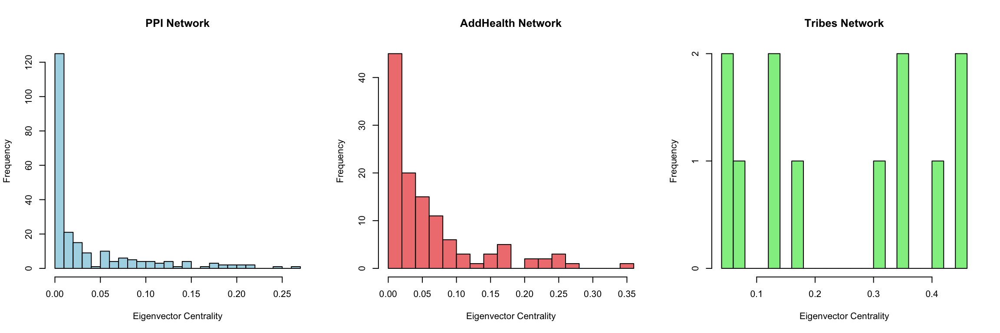
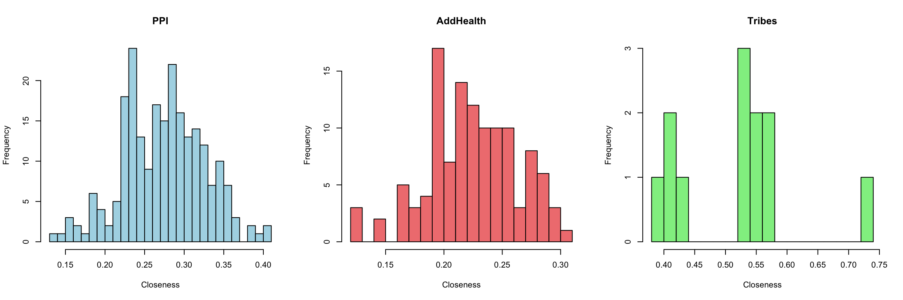
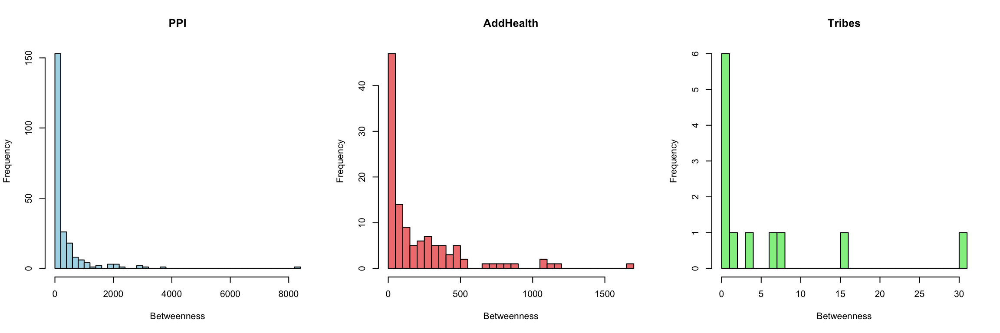
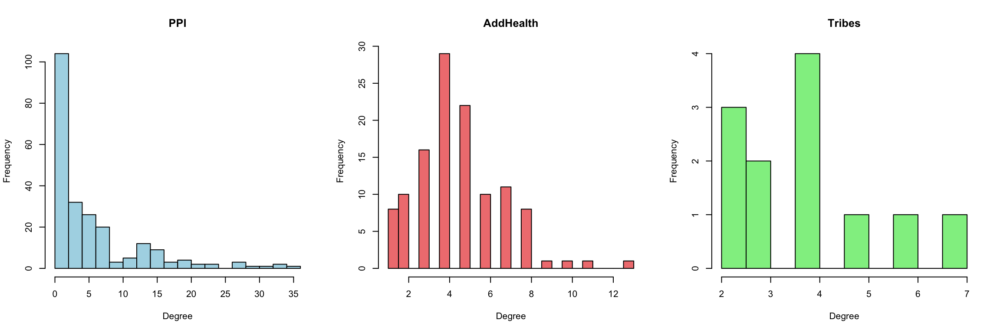
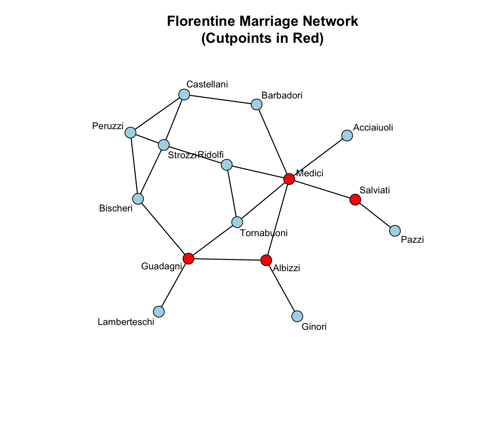
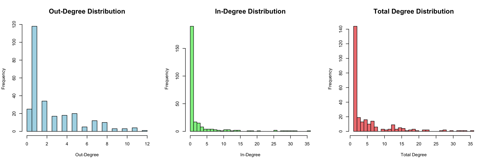
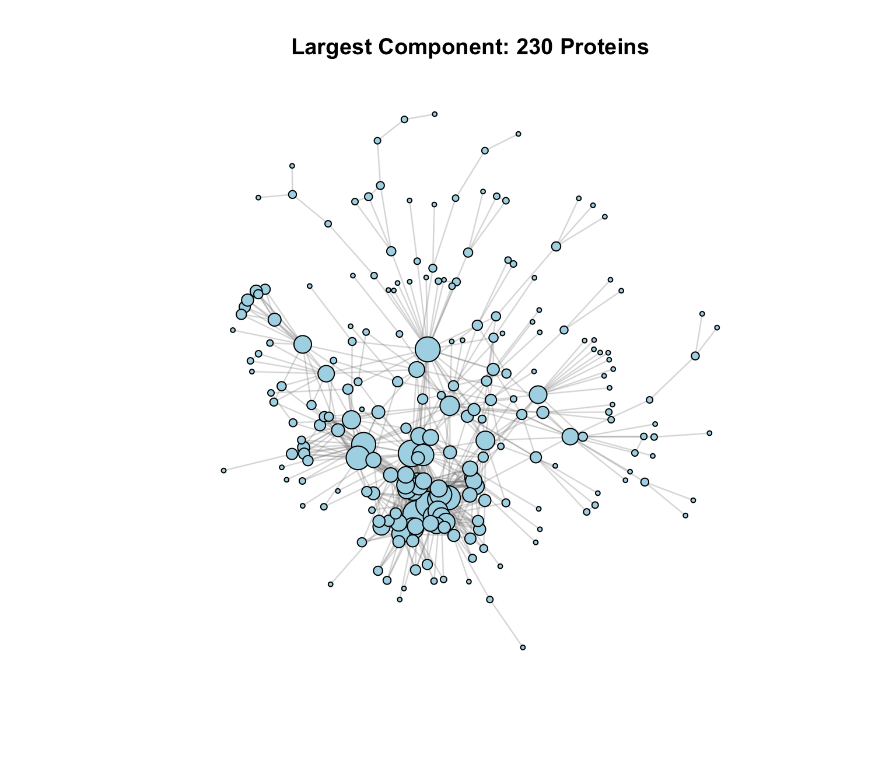
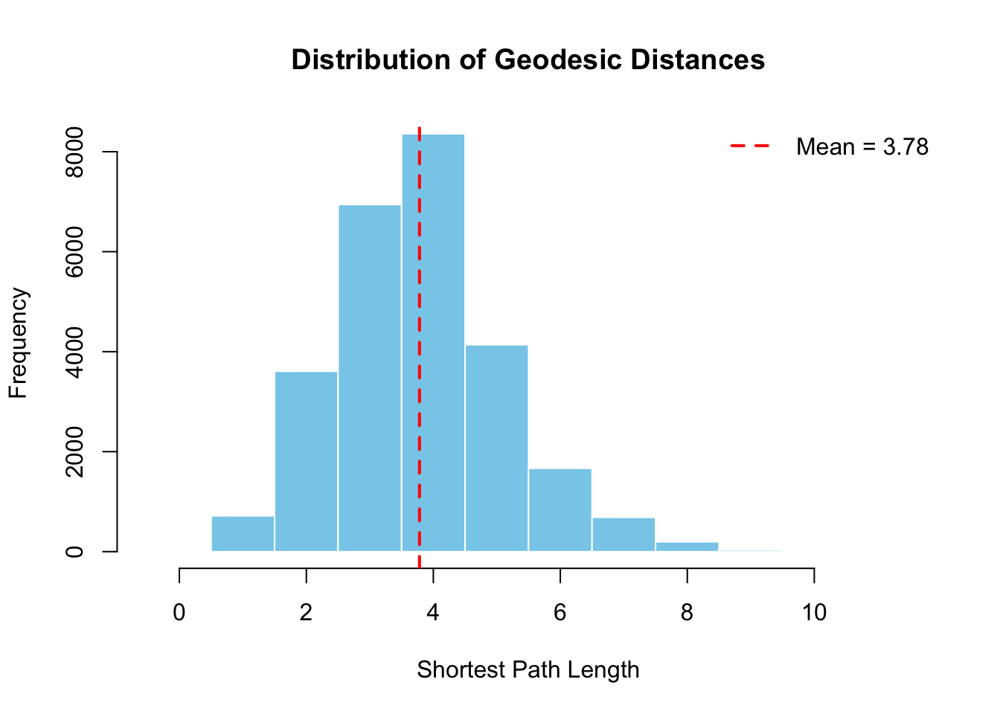
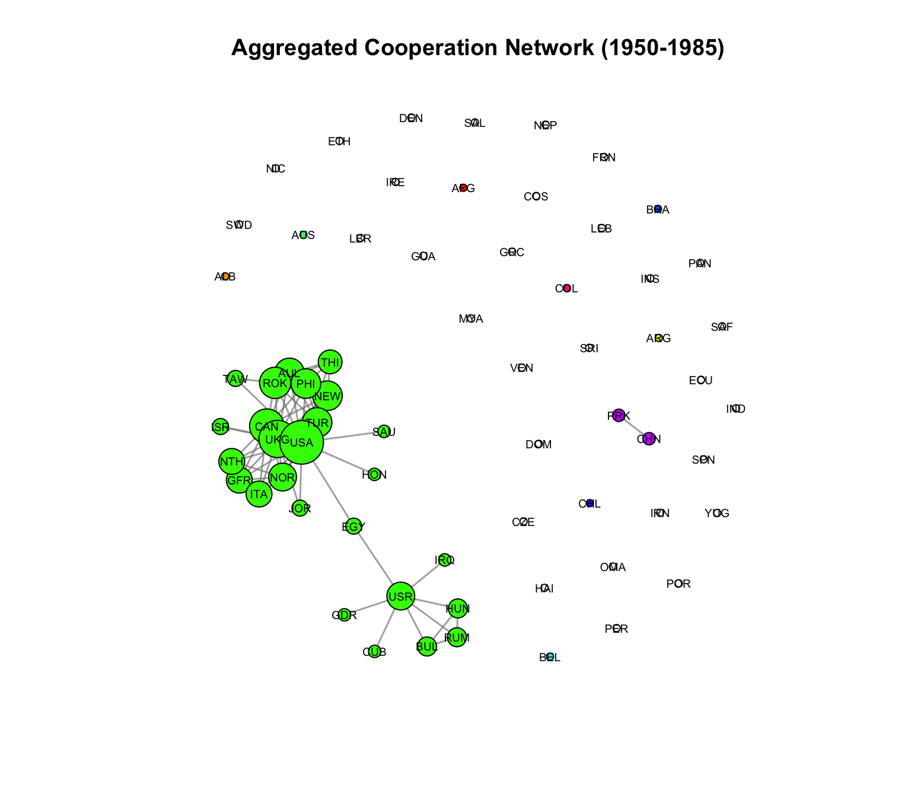

rm(list = ls())
library(networkdata)
library(sna) #network analysis
library(network) #network objects
library(degreenet) #degree distribution modeling
library(knitr)
set.seed(123)In the previous tutorial, we explored the mathematical foundations of network statistics, learning about degree, centrality, diameter, and more. Now it’s time to get our hands dirty with R code! This tutorial will show you how to compute all these measures using real network data.

This tutorial covers five major topics using real-world data:
- Centrality Measures: Identifying important nodes across biological, social, and political networks
- Connectivity Analysis: Understanding network robustness using Renaissance Florence
- Degree Distributions: Modeling connectivity patterns in protein interaction networks
- Component Analysis: Finding connected groups in large biological networks
- Temporal Networks: Analyzing how Cold War alliances evolved over time
By the end, you’ll have a complete toolkit for analyzing networks in any domain!
We’ll use the exact same datasets with SNA Part1, so you can directly compare how different statistics reveal different aspects of network structure. By the end, you’ll be able to conduct a complete network analysis on your own data!
1. Centrality Analysis Across Three Networks
In this section, we’ll analyze three networks to see how centrality varies by context:
- Dataset 1: Protein-Protein Interaction (PPI) Network
- Dataset 2: AddHealth Friendship Network
- Dataset 3: Highland Tribes Network
data(butland_ppi)
data(addhealth9)
data(tribes)
#process addHealth: boys only, largest component
inds <- which(addhealth9$X[, "female"] == 0)
myedges <- (addhealth9$E[, 1] %in% inds) * (addhealth9$E[, 2] %in% inds) == 1
myedges <- addhealth9$E[myedges, ]
tmp <- component.largest(as.network(myedges[, c(1:2)], directed = FALSE),
result = "graph")
addh9 <- as.network(tmp, directed = FALSE)
#process PPI:extract largest component
bppi <- as.network(component.largest(as.network(butland_ppi, directed = FALSE),
result = "graph"),
directed = FALSE)
#process tribes: positive relationships only
tribe <- as.network(component.largest(as.network(tribes[, , "pos"], directed = FALSE),
result = "graph"),
directed = FALSE)
cat("Network Sizes:\n")Network Sizes:cat("PPI:", network.size(bppi), "proteins,", network.edgecount(bppi), "interactions\n")PPI: 230 proteins, 695 interactionscat("AddHealth:", network.size(addh9), "students,", network.edgecount(addh9), "friendships\n")AddHealth: 118 students, 273 friendshipscat("Tribes:", network.size(tribe), "tribes,", network.edgecount(tribe), "alliances\n")Tribes: 12 tribes, 23 alliances1.1 Eigenvector Centrality: Quality Over Quantity
You’re important if you’re connected to other important nodes. It’s not just how many connections you have, but who you’re connected to.
Node-level eigenvector centrality and distribution:
#compute eigenvector centrality
ev_ppi <- evcent(bppi, gmode = "graph")
ev_addh9 <- evcent(addh9, gmode = "graph")
ev_tribe <- evcent(tribe, gmode = "graph")
#summary statistics
ev_summary <- data.frame(
Network = c("PPI", "AddHealth", "Tribes"),
Min = c(min(ev_ppi), min(ev_addh9), min(ev_tribe)),
Q1 = c(quantile(ev_ppi, 0.25), quantile(ev_addh9, 0.25), quantile(ev_tribe, 0.25)),
Median = c(median(ev_ppi), median(ev_addh9), median(ev_tribe)),
Mean = c(mean(ev_ppi), mean(ev_addh9), mean(ev_tribe)),
Q3 = c(quantile(ev_ppi, 0.75), quantile(ev_addh9, 0.75), quantile(ev_tribe, 0.75)),
Max = c(max(ev_ppi), max(ev_addh9), max(ev_tribe)),
SD = c(sd(ev_ppi), sd(ev_addh9), sd(ev_tribe))
)
kable(ev_summary, digits = 4, caption = "Eigenvector Centrality: Summary Statistics")| Network | Min | Q1 | Median | Mean | Q3 | Max | SD |
|---|---|---|---|---|---|---|---|
| PPI | 0.0000 | 0.0008 | 0.0069 | 0.0354 | 0.0508 | 0.2672 | 0.0558 |
| AddHealth | 0.0001 | 0.0099 | 0.0287 | 0.0583 | 0.0744 | 0.3584 | 0.0716 |
| Tribes | 0.0420 | 0.1085 | 0.2390 | 0.2436 | 0.3716 | 0.4585 | 0.1617 |
#visualize distributions
par(mfrow = c(1, 3))
hist(ev_ppi, main = "PPI Network", xlab = "Eigenvector Centrality",
col = "lightblue", breaks = 20)
hist(ev_addh9, main = "AddHealth Network", xlab = "Eigenvector Centrality",
col = "lightcoral", breaks = 20)
hist(ev_tribe, main = "Tribes Network", xlab = "Eigenvector Centrality",
col = "lightgreen", breaks = 20)
Network-level ev centralization:
ev_central_ppi <- centralization(bppi, evcent, mode = "graph")
ev_central_addh9 <- centralization(addh9, evcent, mode = "graph")
ev_central_tribe <- centralization(tribe, evcent, mode = "graph")
cat("Eigenvector Centralization:\n")Eigenvector Centralization:cat("PPI:", round(ev_central_ppi, 3))PPI: 0.331cat("AddHealth:", round(ev_central_addh9, 3))AddHealth: 0.432cat("Tribes:", round(ev_central_tribe, 3))Tribes: 0.3651.2 Closeness Centrality: Efficiency in Reaching Others
How quickly can you reach everyone else? High closeness means short paths to all other nodes—efficient for spreading information.
close_ppi <- closeness(bppi, gmode = "graph")
close_addh9 <- closeness(addh9, gmode = "graph")
close_tribe <- closeness(tribe, gmode = "graph")
close_summary <- data.frame(
Network = c("PPI", "AddHealth", "Tribes"),
Min = c(min(close_ppi), min(close_addh9), min(close_tribe)),
Median = c(median(close_ppi), median(close_addh9), median(close_tribe)),
Mean = c(mean(close_ppi), mean(close_addh9), mean(close_tribe)),
Max = c(max(close_ppi), max(close_addh9), max(close_tribe)),
SD = c(sd(close_ppi), sd(close_addh9), sd(close_tribe))
)
kable(close_summary, digits = 4, caption = "Closeness Centrality: Summary Statistics")| Network | Min | Median | Mean | Max | SD |
|---|---|---|---|---|---|
| PPI | 0.1363 | 0.2756 | 0.2744 | 0.4053 | 0.0507 |
| AddHealth | 0.1263 | 0.2254 | 0.2241 | 0.3063 | 0.0386 |
| Tribes | 0.3929 | 0.5238 | 0.5161 | 0.7333 | 0.0977 |
par(mfrow = c(1, 3))
hist(close_ppi, main = "PPI", xlab = "Closeness", col = "lightblue", breaks = 20)
hist(close_addh9, main = "AddHealth", xlab = "Closeness", col = "lightcoral", breaks = 20)
hist(close_tribe, main = "Tribes", xlab = "Closeness", col = "lightgreen", breaks = 20)
close_central_ppi <- centralization(bppi, closeness, mode = "graph")
close_central_addh9 <- centralization(addh9, closeness, mode = "graph")
close_central_tribe <- centralization(tribe, closeness, mode = "graph")
cat("PPI:", round(close_central_ppi, 3), "\n")PPI: 0.263 cat("AddHealth:", round(close_central_addh9, 3), "→ Very distributed (cohesive friendships)\n")AddHealth: 0.166 → Very distributed (cohesive friendships)cat("Tribes:", round(close_central_tribe, 3), "→ Clear geographic/political positioning\n")Tribes: 0.498 → Clear geographic/political positioning1.3 Betweenness Centrality: Bridges and Brokers
How often do you lie on shortest paths between others? High betweenness means you’re a bridge connecting different parts of the network.
btw_ppi <- betweenness(bppi, gmode = "graph")
btw_addh9 <- betweenness(addh9, gmode = "graph")
btw_tribe <- betweenness(tribe, gmode = "graph")
btw_summary <- data.frame(
Network = c("PPI", "AddHealth", "Tribes"),
Min = c(min(btw_ppi), min(btw_addh9), min(btw_tribe)),
Median = c(median(btw_ppi), median(btw_addh9), median(btw_tribe)),
Mean = c(mean(btw_ppi), mean(btw_addh9), mean(btw_tribe)),
Max = c(max(btw_ppi), max(btw_addh9), max(btw_tribe)),
SD = c(sd(btw_ppi), sd(btw_addh9), sd(btw_tribe))
)
kable(btw_summary, digits = 2, caption = "Betweenness Centrality: Summary Statistics")| Network | Min | Median | Mean | Max | SD |
|---|---|---|---|---|---|
| PPI | 0 | 7.09 | 318.81 | 8334.84 | 785.55 |
| AddHealth | 0 | 92.37 | 211.32 | 1669.50 | 293.78 |
| Tribes | 0 | 1.00 | 5.50 | 31.00 | 9.28 |
par(mfrow = c(1, 3))
hist(btw_ppi, main = "PPI", xlab = "Betweenness", col = "lightblue", breaks = 30)
hist(btw_addh9, main = "AddHealth", xlab = "Betweenness", col = "lightcoral", breaks = 30)
hist(btw_tribe, main = "Tribes", xlab = "Betweenness", col = "lightgreen", breaks = 30)
btw_central_ppi <- centralization(bppi, betweenness, mode = "graph")
btw_central_addh9 <- centralization(addh9, betweenness, mode = "graph")
btw_central_tribe <- centralization(tribe, betweenness, mode = "graph")
cat("PPI:", round(btw_central_ppi, 3), "\n")PPI: 0.308 cat("AddHealth:", round(btw_central_addh9, 3), "\n")AddHealth: 0.217 cat("Tribes:", round(btw_central_tribe, 3), "→ Critical bridge tribes\n")Tribes: 0.506 → Critical bridge tribes
Note
Betweenness is usually right-skewed. Most nodes have near-zero betweenness (they’re not on many shortest paths), while a few “broker” nodes have extremely high values.
1.3 Degree Centrality: The Simple Count
Don’t forget the basics! Degree just counts direct connections. Often the most interpretable measure.
deg_ppi <- degree(bppi, gmode = "graph")
deg_addh9 <- degree(addh9, gmode = "graph")
deg_tribe <- degree(tribe, gmode = "graph")
degree_summary <- data.frame(
Network = c("PPI", "AddHealth", "Tribes"),
Min = c(min(deg_ppi), min(deg_addh9), min(deg_tribe)),
Median = c(median(deg_ppi), median(deg_addh9), median(deg_tribe)),
Mean = c(mean(deg_ppi), mean(deg_addh9), mean(deg_tribe)),
Max = c(max(deg_ppi), max(deg_addh9), max(deg_tribe))
)
kable(degree_summary, digits = 2, caption = "Degree: Summary Statistics")| Network | Min | Median | Mean | Max |
|---|---|---|---|---|
| PPI | 1 | 3 | 6.04 | 36 |
| AddHealth | 1 | 4 | 4.63 | 13 |
| Tribes | 2 | 4 | 3.83 | 7 |
par(mfrow = c(1, 3))
hist(deg_ppi, main = "PPI", xlab = "Degree", col = "lightblue", breaks = 20)
hist(deg_addh9, main = "AddHealth", xlab = "Degree", col = "lightcoral", breaks = 20)
hist(deg_tribe, main = "Tribes", xlab = "Degree", col = "lightgreen", breaks = 10)
deg_central_ppi <- centralization(bppi, degree, mode = "graph")
deg_central_addh9 <- centralization(addh9, degree, mode = "graph")
deg_central_tribe <- centralization(tribe, degree, mode = "graph")1.5 Comparing All Four Centrality Measures
Do different centrality measures agree? Let’s check correlations:
#PPI network correlations
cent_ppi <- cbind(Degree = deg_ppi, Eigenvector = ev_ppi,
Closeness = close_ppi, Betweenness = btw_ppi)
cor_ppi <- cor(cent_ppi)
kable(cor_ppi, digits = 3, caption = "Centrality Correlations: PPI Network")| Degree | Eigenvector | Closeness | Betweenness | |
|---|---|---|---|---|
| Degree | 1.000 | 0.891 | 0.717 | 0.578 |
| Eigenvector | 0.891 | 1.000 | 0.662 | 0.258 |
| Closeness | 0.717 | 0.662 | 1.000 | 0.492 |
| Betweenness | 0.578 | 0.258 | 0.492 | 1.000 |
#AddHealth correlations
cent_addh9 <- cbind(Degree = deg_addh9, Eigenvector = ev_addh9,
Closeness = close_addh9, Betweenness = btw_addh9)
cor_addh9 <- cor(cent_addh9)
kable(cor_addh9, digits = 3, caption = "Centrality Correlations: AddHealth Network")| Degree | Eigenvector | Closeness | Betweenness | |
|---|---|---|---|---|
| Degree | 1.000 | 0.648 | 0.572 | 0.582 |
| Eigenvector | 0.648 | 1.000 | 0.729 | 0.401 |
| Closeness | 0.572 | 0.729 | 1.000 | 0.556 |
| Betweenness | 0.582 | 0.401 | 0.556 | 1.000 |
#Tribes correlations
cent_tribe <- cbind(Degree = deg_tribe, Eigenvector = ev_tribe,
Closeness = close_tribe, Betweenness = btw_tribe)
cor_tribe <- cor(cent_tribe)
kable(cor_tribe, digits = 3, caption = "Centrality Correlations: Tribes Network")| Degree | Eigenvector | Closeness | Betweenness | |
|---|---|---|---|---|
| Degree | 1.000 | 0.870 | 0.910 | 0.664 |
| Eigenvector | 0.870 | 1.000 | 0.721 | 0.322 |
| Closeness | 0.910 | 0.721 | 1.000 | 0.826 |
| Betweenness | 0.664 | 0.322 | 0.826 | 1.000 |
Summary: network centralization comparison
centralization_df <- data.frame(
Network = c("PPI", "AddHealth", "Tribes"),
Degree = c(deg_central_ppi, deg_central_addh9, deg_central_tribe),
Closeness = c(close_central_ppi, close_central_addh9, close_central_tribe),
Betweenness = c(btw_central_ppi, btw_central_addh9, btw_central_tribe),
Eigenvector = c(ev_central_ppi, ev_central_addh9, ev_central_tribe)
)
kable(centralization_df, digits = 3,
caption = "Network Centralization: Comprehensive Comparison")| Network | Degree | Closeness | Betweenness | Eigenvector |
|---|---|---|---|---|
| PPI | 0.132 | 0.263 | 0.308 | 0.331 |
| AddHealth | 0.073 | 0.166 | 0.217 | 0.432 |
| Tribes | 0.345 | 0.498 | 0.506 | 0.365 |
Important
- Degree & Eigenvector often correlate highly (popular nodes tend to know popular people)
- Betweenness often correlates weakly with other kinds of centrality (bridges aren’t always hubs)
- Closeness depends on overall network structure
- Always compute multiple measures, each reveals different aspects of importance.
2. Connectivity & Robustness Analysis
Let’s shift to Renaissance Florence (the Florentine Marriage Network) to study network connectivity. How robust is a network to node removal?
data(florentine)
flo_lc <- as.network(component.largest(flomarriage, result = "graph"),
directed = FALSE)2.1 Finding cutpoints: critical nodes
A cutpoint (or articulation point) is a node whose removal disconnects the network. These are structurally critical positions.
cutpoints_indicator <- cutpoints(flo_lc, mode = "graph", return.indicator = TRUE)
cutpoint_families <- network.vertex.names(flo_lc)[which(cutpoints_indicator == 1)]
cat("Cutpoint families (critical bridges):\n")Cutpoint families (critical bridges):print(cutpoint_families)[1] "Albizzi" "Guadagni" "Medici" "Salviati"cat("\nNumber of cutpoints:", length(cutpoint_families), "\n")
Number of cutpoints: 4 plot(flo_lc,
vertex.col = ifelse(cutpoints_indicator == 1, "red", "lightblue"),
vertex.cex = 2,
displaylabels = TRUE,
label.cex = 0.8,
main = "Florentine Marriage Network\n(Cutpoints in Red)")
Tip
Cutpoint families are structural bridges. Their removal would fragment the network:
- Removing a cutpoint increases the number of components
- These families have unique structural importance beyond degree or centrality
- In alliance networks, cutpoints are vulnerable attack targets
The Florentine network has 4 cutpoints, showing moderate robustness.
2.3 Vertex Connectivity vs Edge Connectivity
Vertex connectivity (κ): Minimum number of nodes to remove to disconnect the network
Edge connectivity (λ): Minimum number of edges to remove to disconnect the network
For Florentine marriages:
- Vertex connectivity = 1 (because cutpoints exist—removing one node disconnects it)
- This makes it relatively vulnerable to targeted attacks
Note
Application Importance:
- Social networks: Cutpoints are key brokers; losing them fragments communities
- Infrastructure: Cutpoints are failure points in transportation/communication networks
- Organizational networks: Cutpoints identify critical personnel for knowledge transfer
3.1 Degree Distribution Modeling
The Yeast Protein Interaction Network. Now let’s analyze a large biological network to understand degree distributions, the pattern of connectivity across nodes.
yeast_data <- read.table("CCSB-Y2H.txt",
header = FALSE, sep = "\t", stringsAsFactors = FALSE)
yeast_edgelist <- yeast_data[, 1:2]
#check self-loops
sum(yeast_edgelist[,1] == yeast_edgelist[,2]) #total have 168 self-loops
#remove self-loops
yeast_edgelist_clean <- yeast_edgelist[yeast_edgelist[, 1] != yeast_edgelist[, 2], ]
cat("Original edges:", nrow(yeast_edgelist), "\n")
cat("Edges after removing self-loops:", nrow(yeast_edgelist_clean), "\n")4.1 Creating directed network and computing degrees
#create directed network
yeast_edgelist_clean <- butland_ppi
yeast_net <- network(yeast_edgelist_clean, matrix.type = "edgelist", directed = TRUE)
# Compute degree sequences
out_deg <- degree(yeast_net, cmode = "outdegree") # Proteins this protein binds to
in_deg <- degree(yeast_net, cmode = "indegree") # Proteins that bind to this protein
total_deg <- out_deg + in_deg # Total activity
# Check correlation
cor_in_out <- cor(in_deg, out_deg)
cat("Correlation between in-degree and out-degree:", round(cor_in_out, 3), "\n")Correlation between in-degree and out-degree: 0.116 # Visualize degree distributions
par(mfrow = c(1, 3))
hist(out_deg, breaks = 30, main = "Out-Degree Distribution",
xlab = "Out-Degree", col = "lightblue", cex.main = 1.5)
hist(in_deg, breaks = 30, main = "In-Degree Distribution",
xlab = "In-Degree", col = "lightgreen", cex.main = 1.5)
hist(total_deg, breaks = 30, main = "Total Degree Distribution",
xlab = "Total Degree", col = "lightcoral", cex.main = 1.5)
4.2 Fitting degree distribution models
Many biological networks show heavy-tailed degree distributions (a few “hub” proteins with many connections). Let’s test different statistical models:
#fit various degree distribution models
#note: These require the degreenet package
# 1. Discrete Pareto/Zipf (power law)
dpml_fit <- adpmle(total_deg)
# 2. Yule distribution
yule_fit <- ayulemle(total_deg)
# 3. Waring distribution
waring_fit <- awarmle(total_deg)
# 4. Poisson distribution
pois_fit <- apoimle(total_deg)
# 5. Conway-Maxwell-Poisson
cmp_fit <- acmpmle(total_deg)
#compare models using AIC/BIC
#lower values = better fit
model_comparison <- data.frame(
Model = c("Zipf", "Yule", "Waring", "Poisson", "CMP"),
AIC = c(dpml_fit$AIC, yule_fit$AIC, waring_fit$AIC,
pois_fit$AIC, cmp_fit$AIC),
BIC = c(dpml_fit$BIC, yule_fit$BIC, waring_fit$BIC,
pois_fit$BIC, cmp_fit$BIC)
)
kable(model_comparison, digits = 1,
caption = "Degree Distribution Model Comparison (Lower = Better)")
Common Degree Distributions in Real Networks
- Power law (Zipf/Yule): “Scale-free” networks. Common in biological, social, and technological networks. A few hubs dominate.
- Poisson: Random networks. Most nodes have similar degree around the mean.
- Waring: Overdispersed. More variability than Poisson.
- CMP: Flexible—can be overdispersed or underdispersed.
Protein interaction networks typically show power-law-like distributions.
4. Component Analysis
4.1 Finding giant components in large networks
When networks are large and potentially fragmented, component analysis is crucial. Let’s analyze the undirected yeast network:
yeast_net_undirected <- network(yeast_edgelist_clean,
matrix.type = "edgelist",
directed = FALSE)
cat("Network size:", network.size(yeast_net_undirected), "proteins\n")Network size: 270 proteinscat("Number of edges:", network.edgecount(yeast_net_undirected), "interactions\n\n")Number of edges: 716 interactionscomp_dist <- component.dist(yeast_net_undirected)
sorted_sizes <- sort(comp_dist$csize, decreasing = TRUE)
cat("Number of components:", length(comp_dist$csize), "\n")Number of components: 20 cat("Largest component size:", sorted_sizes[1], "proteins\n")Largest component size: 230 proteinscat("Second largest:", sorted_sizes[2], "proteins\n")Second largest: 3 proteinscat("Component sizes:", head(sorted_sizes, 10), "\n")Component sizes: 230 3 3 2 2 2 2 2 2 2 4.2 Does It Have a Giant Component?
A giant component is one that contains a substantial fraction of all nodes (typically >50%).
n_total <- network.size(yeast_net_undirected)
largest_size <- max(comp_dist$csize)
proportion_in_largest <- largest_size / n_total
cat("Proportion in largest component:", round(proportion_in_largest, 3), "\n")Proportion in largest component: 0.852 if (proportion_in_largest > 0.5) {
cat("YES - This network has a GIANT COMPONENT!\n")
cat("Interpretation: Most proteins are interconnected in one large interaction network.\n")
} else {
cat("NO giant component - network is highly fragmented.\n")
}YES - This network has a GIANT COMPONENT!
Interpretation: Most proteins are interconnected in one large interaction network.4.4 Visualizing the largest component
largest_comp_id <- which.max(comp_dist$csize)
nodes_in_largest <- which(comp_dist$membership == largest_comp_id)
largest_component <- get.inducedSubgraph(yeast_net_undirected, v = nodes_in_largest)
largest_comp_degree <- degree(largest_component, cmode = "freeman")
set.seed(123)
plot(largest_component,
main = paste("Largest Component:", max(comp_dist$csize), "Proteins"),
vertex.cex = sqrt(largest_comp_degree) * 0.3,
vertex.col = "lightblue",
edge.col = rgb(0.5, 0.5, 0.5, 0.2),
displayisolates = FALSE)
4.5 Geodesic Distance Analysis
For the full network, let’s analyze geodesic distances (shortest paths):
#compute all pairwise geodesic distances
geodist_matrix <- geodist(yeast_net_undirected)
dist_matrix <- geodist_matrix$gdist
#extract upper triangle (undirected network is symmetric)
upper_tri_indices <- upper.tri(dist_matrix)
all_distances <- dist_matrix[upper_tri_indices]
#separate reachable and unreachable pairs
reachable_distances <- all_distances[is.finite(all_distances)]
n_reachable <- length(reachable_distances)
total_pairs <- length(all_distances)
#calculate statistics
prop_reachable <- n_reachable / total_pairs
mean_geodist <- mean(reachable_distances)
cat("Total node pairs:", total_pairs, "\n")Total node pairs: 36315 cat("Reachable pairs:", n_reachable, "(", round(prop_reachable * 100, 1), "%)\n")Reachable pairs: 26358 ( 72.6 %)cat("Mean geodesic distance:", round(mean_geodist, 2), "\n\n")Mean geodesic distance: 3.78 #distance distribution
distance_table <- table(reachable_distances)
distance_df <- data.frame(
Distance = as.numeric(names(distance_table)),
Frequency = as.numeric(distance_table),
Proportion = round(as.numeric(distance_table) / n_reachable, 4)
)
kable(distance_df, caption = "Geodesic Distance Distribution (Reachable Pairs)")| Distance | Frequency | Proportion |
|---|---|---|
| 1 | 716 | 0.0272 |
| 2 | 3607 | 0.1368 |
| 3 | 6943 | 0.2634 |
| 4 | 8358 | 0.3171 |
| 5 | 4138 | 0.1570 |
| 6 | 1667 | 0.0632 |
| 7 | 686 | 0.0260 |
| 8 | 197 | 0.0075 |
| 9 | 36 | 0.0014 |
| 10 | 9 | 0.0003 |
| 11 | 1 | 0.0000 |
#visualize
hist(reachable_distances,
breaks = seq(0, max(reachable_distances) + 1, by = 1) - 0.5,
main = "Distribution of Geodesic Distances",
xlab = "Shortest Path Length",
ylab = "Frequency",
col = "skyblue",
border = "white")
abline(v = mean_geodist, col = "red", lwd = 2, lty = 2)
legend("topright", legend = paste("Mean =", round(mean_geodist, 2)),
col = "red", lty = 2, lwd = 2, bty = "n")
Note
- Proportion reachable: Shows how connected the network is overall
- Mean geodesic distance: Average “degrees of separation” in the network
- Distribution shape: Tells us if distances are uniform or if some pairs are very far apart
Small-world networks have short average distances despite large size!
5. Temporal Network Analysis - Cold War Dynamics
So far, we’ve analyzed static networks—single snapshots. But many real networks evolve! Let’s analyze Cold War cooperation networks from 1950-1985.
Load the Cold War dataset.
data(coldwar)
#This is a 3D array: 66 countries × 66 countries × 8 time periods
cc_array <- coldwar$cc #cooperation and conflict network
countries <- dimnames(coldwar$cc)[[1]]
years <- dimnames(coldwar$cc)[[3]]
cat("Dataset structure:\n")Dataset structure:cat("Countries:", length(countries), "\n")Countries: 66 cat("Time periods:", length(years), "\n")Time periods: 8 cat("Years:", years, "\n")Years: 1950 1955 1960 1965 1970 1975 1980 1985 5.1 Analyzing components across time
For each year, let’s identify the two largest alliance blocs:
#store results
component_results <- list()
#analyze each year
for (i in 1:length(years)) {
year <- years[i]
cat("\n=== Year:", year, "===\n")
#extract adjacency matrix for this year
adj_matrix <- cc_array[, , i]
#keep only cooperative relations (set negative to 0)
adj_matrix[adj_matrix < 0] <- 0
diag(adj_matrix) <- 0
#create network
net_year <- network(adj_matrix, matrix.type = "adjacency", directed = FALSE)
network.vertex.names(net_year) <- countries
#compute components
comp_dist_year <- component.dist(net_year)
sorted_comp_sizes <- sort(comp_dist_year$csize, decreasing = TRUE)
cat("Number of components:", length(comp_dist_year$csize), "\n")
cat("Top 3 component sizes:", head(sorted_comp_sizes, 3), "\n")
#get two largest components
if (length(comp_dist_year$csize) >= 2) {
largest_size <- sorted_comp_sizes[1]
second_largest_size <- sorted_comp_sizes[2]
largest_id <- which(comp_dist_year$csize == largest_size)[1]
second_largest_id <- which(comp_dist_year$csize == second_largest_size)
second_largest_id <- second_largest_id[second_largest_id != largest_id][1]
countries_largest <- countries[comp_dist_year$membership == largest_id]
countries_second <- countries[comp_dist_year$membership == second_largest_id]
cat("\nLargest component (", largest_size, " countries):\n", sep = "")
cat(paste(countries_largest, collapse = ", "), "\n")
cat("\nSecond largest (", second_largest_size, " countries):\n", sep = "")
cat(paste(countries_second, collapse = ", "), "\n")
component_results[[year]] <- list(
largest = countries_largest,
second_largest = countries_second,
largest_size = largest_size,
second_size = second_largest_size
)
} else {
cat("\nOnly ONE component exists (all countries connected)\n")
component_results[[year]] <- list(
largest = countries,
second_largest = character(0),
largest_size = comp_dist_year$csize[1],
second_size = 0
)
}
}
=== Year: 1950 ===
Number of components: 55
Top 3 component sizes: 8 4 2
Largest component (8 countries):
AUL, CAN, NEW, PHI, ROK, TUR, UKG, USA
Second largest (4 countries):
BUL, HUN, RUM, USR
=== Year: 1955 ===
Number of components: 64
Top 3 component sizes: 3 1 1
Largest component (3 countries):
ROK, TAW, USA
Second largest (1 countries):
AFG
=== Year: 1960 ===
Number of components: 62
Top 3 component sizes: 4 2 1
Largest component (4 countries):
NOR, ROK, TUR, USA
Second largest (2 countries):
CUB, USR
=== Year: 1965 ===
Number of components: 61
Top 3 component sizes: 6 1 1
Largest component (6 countries):
AUL, NEW, ROK, THI, UKG, USA
Second largest (1 countries):
AFG
=== Year: 1970 ===
Number of components: 56
Top 3 component sizes: 9 3 1
Largest component (9 countries):
AUL, ISR, JOR, NEW, PHI, ROK, THI, UKG, USA
Second largest (3 countries):
EGY, IRQ, USR
=== Year: 1975 ===
Number of components: 65
Top 3 component sizes: 2 1 1
Largest component (2 countries):
ROK, USA
Second largest (1 countries):
AFG
=== Year: 1980 ===
Number of components: 58
Top 3 component sizes: 8 2 1
Largest component (8 countries):
CAN, GFR, ITA, NOR, NTH, ROK, UKG, USA
Second largest (2 countries):
ISR, JOR
=== Year: 1985 ===
Number of components: 58
Top 3 component sizes: 7 2 2
Largest component (7 countries):
EGY, GFR, HON, ROK, SAU, UKG, USA
Second largest (2 countries):
GDR, USR Summary: Cold War Alliance Evolution
summary_df <- data.frame(
Year = years,
Largest_Size = sapply(component_results, function(x) x$largest_size),
Second_Size = sapply(component_results, function(x) x$second_size),
Fragmentation = sapply(component_results, function(x) {
if (x$largest_size == 0) return(NA)
1 - (x$largest_size / length(countries))
})
)
kable(summary_df, digits = 3,
caption = "Cold War Network Evolution: Component Sizes Over Time")| Year | Largest_Size | Second_Size | Fragmentation | |
|---|---|---|---|---|
| 1950 | 1950 | 8 | 4 | 0.879 |
| 1955 | 1955 | 3 | 1 | 0.955 |
| 1960 | 1960 | 4 | 2 | 0.939 |
| 1965 | 1965 | 6 | 1 | 0.909 |
| 1970 | 1970 | 9 | 3 | 0.864 |
| 1975 | 1975 | 2 | 1 | 0.970 |
| 1980 | 1980 | 8 | 2 | 0.879 |
| 1985 | 1985 | 7 | 2 | 0.894 |
Note
Looking at these patterns, we can see:
- Largest components consistently center around the US and key allies (UK, Australia, Canada, South Korea)
- Component sizes fluctuate dramatically—from 2 countries (1975) to 9 countries (1970)
- Second-largest components are strikingly small, occasionally including Soviet-aligned nations
- This fragmentation reflects Cold War bipolarity: distinct Western and Eastern blocs with limited cooperation
5.2 Aggregated Cooperation Network
What if we aggregate cooperation across all years?
#sum across all years
cooperation_sum <- apply(cc_array, c(1, 2), sum)
cooperation_sum[cooperation_sum < 0] <- 0
diag(cooperation_sum) <- 0
#create binary: 1 if any cooperation, 0 otherwise
cooperation_binary <- ifelse(cooperation_sum > 0, 1, 0)
#create aggregated network
net_aggregated <- network(cooperation_binary, matrix.type = "adjacency", directed = FALSE)
network.vertex.names(net_aggregated) <- countries
#analyze components
comp_dist_agg <- component.dist(net_aggregated)
sorted_sizes_agg <- sort(comp_dist_agg$csize, decreasing = TRUE)
cat("=== Aggregated Network (1950-1985) ===\n")=== Aggregated Network (1950-1985) ===cat("Number of components:", length(comp_dist_agg$csize), "\n")Number of components: 40 cat("Largest component:", sorted_sizes_agg[1], "countries\n")Largest component: 26 countriescat("Second largest:", sorted_sizes_agg[2], "countries\n")Second largest: 2 countries#plot
degree_agg <- degree(net_aggregated, cmode = "freeman")
component_colors <- rainbow(min(length(unique(comp_dist_agg$membership)), 10))
node_colors <- component_colors[comp_dist_agg$membership]
set.seed(789)
gplot(net_aggregated,
gmode = "graph",
mode = "fruchtermanreingold",
vertex.cex = sqrt(degree_agg + 1) * 0.5,
vertex.col = node_colors,
vertex.border = "black",
edge.col = rgb(0.5, 0.5, 0.5, 0.3),
label = network.vertex.names(net_aggregated),
label.cex = 0.6,
label.pos = 5,
main = "Aggregated Cooperation Network (1950-1985)",
displayisolates = TRUE)
6. Summary: Key Functions Reference
Here’s a quick reference of all the key functions we’ve covered:
Basic Properties
| Function | Purpose | Example |
|---|---|---|
network.size() |
Number of nodes | network.size(nw) |
network.edgecount() |
Number of edges | network.edgecount(nw) |
is.directed() |
Check if directed | is.directed(nw) |
gden() |
Network density | gden(nw) |
Connectivity
| Function | Purpose | Example |
|---|---|---|
component.dist() |
Find components | component.dist(nw) |
get.inducedSubgraph() |
Extract subnetwork | get.inducedSubgraph(nw, v = nodes) |
cutpoints() |
Find articulation points | cutpoints(nw, mode = "graph") |
Distance Measures
| Function | Purpose | Example |
|---|---|---|
geodist() |
All pairwise distances | geodist(nw) |
| Distance matrix | Shortest path lengths | geodist(nw)$gdist |
Node-Level Centrality
| Function | Purpose | Example |
|---|---|---|
degree() |
Degree centrality | degree(nw, gmode = "graph") |
closeness() |
Closeness centrality | closeness(nw, gmode = "graph") |
betweenness() |
Betweenness centrality | betweenness(nw, gmode = "graph") |
evcent() |
Eigenvector centrality | evcent(nw, gmode = "graph") |
Network-Level Measures
| Function | Purpose | Example |
|---|---|---|
centralization() |
Network centralization | centralization(nw, degree, mode = "graph") |
max(eccentricity) |
Network diameter | max(apply(dist_matrix, 1, max)) |
Degree Distribution Modeling
| Function | Purpose | Example |
|---|---|---|
adpmle() |
Fit Zipf/Pareto | adpmle(degree_sequence) |
ayulemle() |
Fit Yule | ayulemle(degree_sequence) |
awarmle() |
Fit Waring | awarmle(degree_sequence) |
apoimle() |
Fit Poisson | apoimle(degree_sequence) |
acmpmle() |
Fit CMP | acmpmle(degree_sequence) |
Temporal Network Analysis
| Technique | Purpose | Code Pattern |
|---|---|---|
| Loop through time | Analyze each period | for(i in 1:n_periods) {...} |
| Track components | Monitor evolution | component.dist(net_t) |
| Aggregation | Combine over time | apply(array, c(1,2), sum) |
6.6 Important Arguments
gmode: For undirected networks usegmode = "graph", for directed usegmode = "digraph"cmode: For directed degree, usecmode = "indegree"orcmode = "outdegree"mode: Similar to gmode—usemode = "graph"for undirected networks